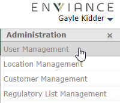
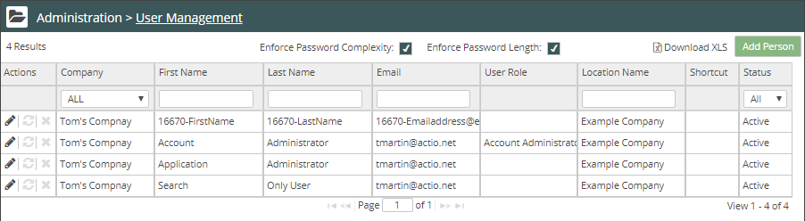
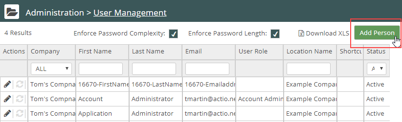
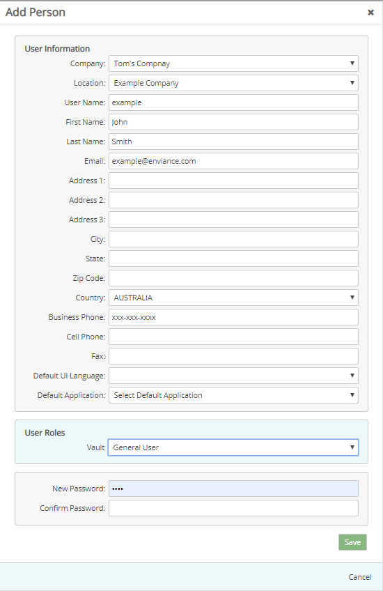
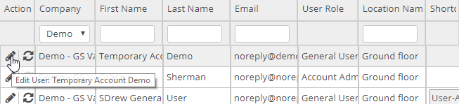
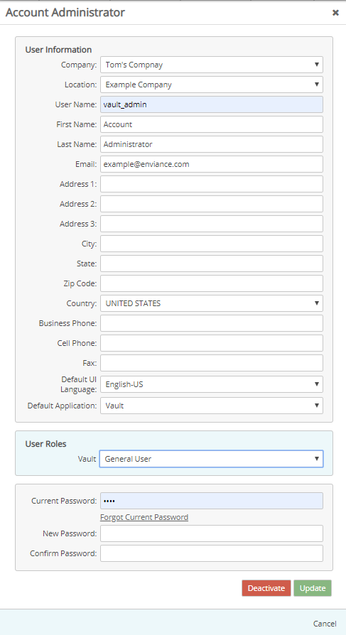
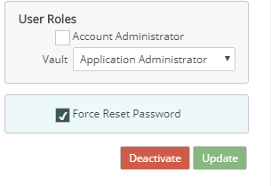
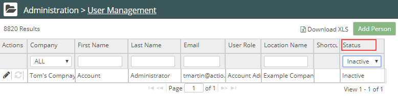
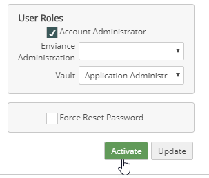
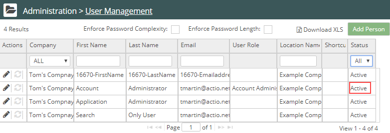

Click the drop-down arrow next to your name top right. Select Administration from the menu.

In the Administration menu, select User Management.

The User Management page displays.
To create and manage users you must have the Account Administrator role.
To access User Management:
Click the drop-down arrow next to your name top right. Select Administration from the menu.
In the Administration menu, select User Management.

The User Management page displays.

User role:
Users are assigned to a Role for each application to which they are granted access. All Gatekeeper and Regulator users must be assigned a Vault role in addition to their Gatekeeper and Regulator roles.
The Roles, from lowest to highest, include:
The permissions granted to each role for each application are detailed in User Roles. Each level includes the privileges of the lower level(s).
Shortcut Icons:
The last three columns are for managing Instant Access Icons: Instant Access Icons can be deployed a user system as a desktop shortcut that will give one-click access to Vault. When the user clicks they will be logged in under the given username. See Instant Access Shortcuts.
To add a user:
On the User Management page, select Add a Person.

The user profile setup page is displayed.

Complete the information fields for the user.
Required fields: User Name, First Name, Last Name, Email Address, Business Phone, Default Interface Language
Location: To set a default location for the user, select the location from the list.
Choose the user role for each product. If no role is selected, the user will not have access to that product.
See User Roles for details of the permissions granted for each user role.
Note: Gatekeeper and Regulator users must also have a Vault user role (at minimum General User).
Optionally, you may select the Default Application for the user. The default application is displayed when the user signs in.
Note: If you are using the Single Sign-On authentication process (Administration > Customer Management > Corporation Name page; from the Details tab, check the Allow IDP box ), the password is managed by your company and can't be managed by any user, including the Account Administrator.
To edit a user:
On the User Management page, click the Edit icon for the user (first column in the user table).

Edit the user fields as needed. If you do not know the user current password, click Forgot Current Password and follow instructions.


Note: If you are using the Single Sign-On authentication process (Administration > Customer Management > Corporation Name page; from the Details tab, check the Allow IDP box ), the password is managed by the company and can't be managed by any user, including the Account Administrator.
To deactivate a user:

To reactivate a user:


Related topics: